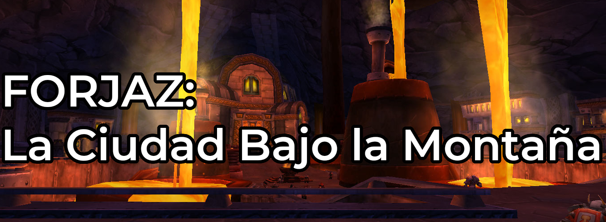
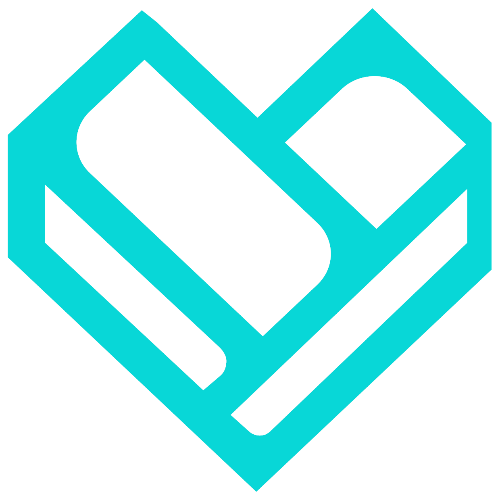
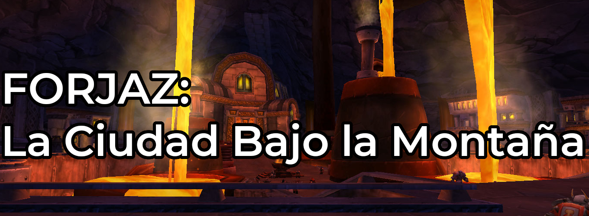
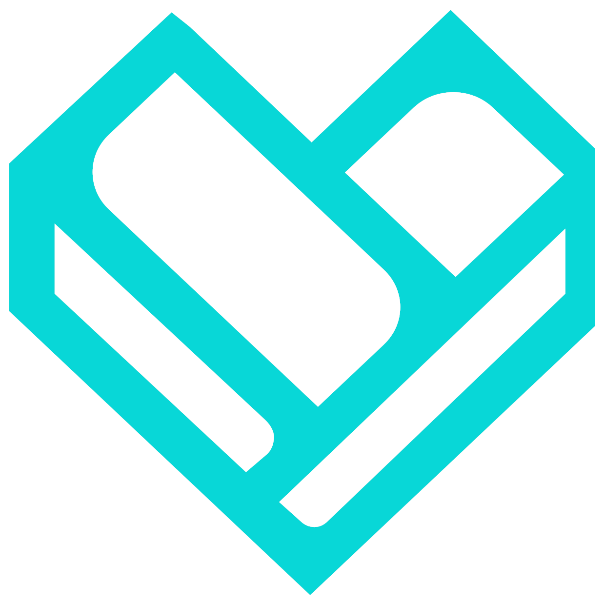

Contenido
Esta es la página principal, desde acá podrás navegar por todas mis páginas, no olvides que en el respositorio está todo completamente documentado.
|  |
Otros
|  |


Imagen para retornar a esta página desde cualquier página
Esta es la página principal, desde acá podrás navegar por todas mis páginas, no olvides que en el respositorio está todo completamente documentado.
|  |
|  |
 |
Página creada por Mateo Ortiz |